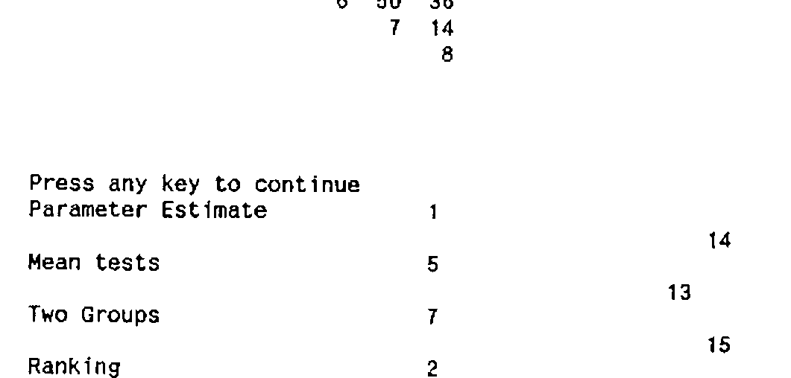

Personal Construct Analysis in APL
Vector 6:1, page 73
Transcribed from the printed issue; not yet reviewed. Read it in the PDF of the issue, page 73
About the Author¶
You ask for a very short potted biography of my career. Here goes…
Graduated from Newcastle University with an upper second in statistics. After a very brief summer job working for British Gas, returned to the university to work as a research assistant under G.B. Wetherill on a project to build an intelligent system for regression analysis.
Due to various monetary problems, project became a general investigation of statistical expert systems. It was in the course of investigating a possible system for data editing that I first learnt APL, by building a program to set up a system of edits. Since then, APL has been used by me to build ExpCheck (a system for spotting non-statistical faults in proposed experimental designs).
Currently, I am halfway through a Ph.D. on Aspects of model and rule elicitation for statistical expert systems, in which all of the algorithms and programs are been written in APL. This paper now forms part of that project.
Introduction¶
In a note that was published last year in Vector [7], I explained how APL could be used as the base language for a fault-spotting system for proposed experimental designs. The natural question to arise from that was whether APL could be used for other aspects of artificial intelligence, in particular the handling of rules and reasoning. Some aspects of these problems have been considered within the pages of this journal, for example by Christopher Harvey [1],[2], and most recently by Allan Prys-Williams [4]. However, they have mainly dealt with the manipulation of already existing rules, and also used either APL2 or Dyalog APL, both of which come with features not available currently in other common interpreters.
What I want to do in this note is to show that APL can also be useful in obtaining rules for expert systems, and that the technique can be used in any dialect of the language. For my purposes, the techniques will be illustrated by obtaining rules for picking from a set of very simple statistical tests. However, it is my belief that the algorithms and programs illustrated here can be used in any situation where selection from a list of choices is involved.
A Brief History¶
However, the formation of rules in a given situation is not possible without some form of ‘picture’ of the problem. A technique is needed that enables us to gain that picture - personal construct analysis is just such a technique. Personal construct analysis is a fairly well known technique, used in psychology to help understand a particular situation and in personal assessment. The proposer of the theory itself was George A. Kelly [3] in 1955. In the deceptively slim volume which presented the original ideas, he contended that a man reaches decisions about a situation by comparing it to similar problems that he has encountered in the past. These past events are used to form a type of scale in his mind, known as a construct, against which he measures each new situation and amends his decision accordingly.
Obviously, if these constructs could be obtained and used in some way, then the way in which a person makes decisions could be modelled. Mildred Shaw saw the possibilities in this, and devised a suite of programs that obtains these constructs by interactive questioning of a person.[5] This was made possible by starting with a basic set of things to decide about, and a small set of constructs that separate these objects. A construct can be thought of as a sort of scale, at one end of which is a description of some characteristic that distinguishes the objects or elements from each other, and at the other end a related but different aspect of the characteristic. Each end of the construct is known as a pole, the former been the left hand pole (LHP) and the latter the right hand pole (RHP). Then each of the objects or elements is scored against each construct. If the left hand pole is true, a score of 1 is allocated to that element for that construct.
Conversely, if the right hand pole is true, then a score of n is allocated, where n is some odd integer. For our example, n will be taken to be 5. If neither pole is strictly true, a score of between 1 and n is allocated. In this way, a matrix of scores for all elements against all constructs is formed. This is analysed, and new elements and/or constructs are added as a result of each stage of the analysis. In the end, a picture of the decision making process employed by the user is contained in the matrix of scores.
Although the actual process of forming the grid is simple, the original program that carried out the analysis required a very powerful micro in order to be fully and efficiently operational. Since then, scaled down versions have appeared in various languages, including BBC Basic. However, to the best of my knowledge, nobody has yet attempted to program a version in APL. This is mildly surprising, as the matrix structure used would make APL the ideal language to program in.
In addition, the possibility obviously existed of using the grid to obtain rules that model the way in which the user reached his selection or decision. This would be extremely valuable, as an effective portable method of gaining useful rules for any expert system. In the selection of tests or models in statistics, I have proposed that these rules be known
as Strategic Selection Rules, and have introduced them in a paper currently under preparation [8].
So how are the relevant techniques, algorithms, etc., prepared and programmed so that they can be executed? In the next section, we will look at the program that emulates the one prepared by Mildred Shaw for construct elicitation, PEGASUS. Then we will look at how a basic analysis of the grid can be done, again emulating one of Shaw’s programs - FOCUS. Finally, the program for obtaining the rules will be introduced - SEARCH.
Pegasus¶
PEGASUS is actually a workspace, prepared in APL*PLUS, which contains a number of functions that are used for obtaining the matrix. First of all, a starter set of six elements to be separated is entered, and then four constructs are obtained that separate out those six elements.
The trick in obtaining the rest of the constructs and/or elements is to see how closely matched the elements have become, once the values against the first four constructs are obtained. If we have two elements, I & J, and the matrix containing the scores is A, then the similarity between the elements is measured by:
where CC is the current number of constructs, and the summation is over all existing constructs.
The following APL function does this operation:
FUNCTION1;I;J;R;T;X;Y
---------------------
[1] ⍝
[2] ⍝ This checks all possible pairs of elements, and finds that
[3] ⍝ with the highest matching score. If that score is above 70,
[4] ⍝ a new construct is suggested to seperate them.
[5] FLAG←0 ⋄ T←0
[6] 'STAGE 3 - ELEMENT MATCHING' ⋄ '' ⋄ 'Please wait ...' ⋄ I←1
[7] L1:J←I+1
[8] L2:R←100-100×(+/|A[I;]-A[J;])÷(4×CC)
[9] →(R<T)/L3
[10] T←R ⋄ X←I ⋄ Y←J
[11] L3:→((J←J+1)≤EE)/L2
[12] →((I←I+1)≤EE-1)/L1
[13] →(T<70)/0
[14] 'The following are matched at ',(⍕(⌊T+0.5)),' per cent :-'
[15] ⎕←E[(X,Y);]
[16] 'You need to provide a new construct to separate these two'
[17] 'in some way that has not been used already.'
[18] 'Do you wish to do that?'
[19] X←⍞
[20] →((1↑X)∊'YY')/L4
[21] →0
[22] L4:FLAG←1
∇
The largest value, and the elements that generate that value, are noted. If the value exceeds a given limit, then a new construct to separate these two elements is asked for. A similar situation allows us to add new elements by comparing constructs. However, because of the nature of personal constructs, we have to allow for the possibility of reverse matching.
The following function performs that task. Note especially that the formula for similarity has been subtly adapted to accommodate the reverse matching.
FUNCTION2;I;X;R;T
-----------------
[1] ⍝
[2] ⍝ This checks all existing constructs against the last to be
[3] ⍝ entered, to see if any of them are too closely matched.
[4] ⍝ If there are any, a new element is asked for.
[5] FLAG←0
[6] 'STAGE 5 - CONSTRUCT MATCHING' ⋄ '' ⋄ 'Please wait ....'
[7] T←0 ⋄ I←1
[8] L1:R←100-200×(+/|((,A[;I])-,A[;CC]))÷(4×EE)
[9] →(R≥0)/L2
[10] 'Reverse matching on constructs ',(⍕I),' and ',(⍕CC)
[11] R←100-200×(+/|((,A[;I])-(6-,A[;CC])))÷(4×EE)
[12] L2:→(R<T)/L3
[13] T←R ⋄ X←I
[14] L3:→((I←I+1)≤CC-1)/L1
[15] →(T<70)/0
[16] 'The following are matched at ',(⍕(⌊T+0.5)),' per cent'
[17] ⎕←((C[X;]),' - '),D[X;] ⋄ ⎕←((C[CC;]),' - '),D[CC;]
[18] 'What is required is a new element to take different scores on'
[19] 'these scales. Can you think of such an element?'
[20] X←⍞
[21] →((1↑X)∊'YY')/L4
[22] →0
[23] L4:FLAG←1
∇
When the user is satisfied with his set of constructs, they are stored in a component file, and a report of his results is given. For example, the following was obtained while trying to find ways of selecting from a list of two sample analysis techniques.
Do you wish to save the results?
N
Please wait for a few seconds.
The purpose fo your grid was:-
Compare Significance Tests
The following is the current score matrix:-
1 5 1 1 1 5 1 1
1 5 1 1 5 5 5 1
5 3 1 3 3 3 4 5
1 1 3 5 1 1 1 5
3 1 5 2 3 3 1 5
3 1 5 5 3 1 1 1
1 5 2 1 1 1 1 2
The elements you were examining were :-
T-Test
F-Test
Chi-Square
Median
Corr.Coeff
Spearmans
Aspin-Welch
and the constructs that you used were :-
Parameter estimate - Relationships
Ranking - No Ranking
Normality Assumed - No Normality Assumptions
Parametric - Non-Parametric
Mean tests - Variance tests
Robust - Non-Robust
Two Groups - Many Groups
Tables for Results - Formulae for Results
Thank you for running this program.
Having obtained the grid, the user can now go and see how all the elements and constructs relate to each other. To do this, we need the next workspace to be prepared - FOCUS.
Focus¶
Once again, FOCUS is a collection of programs that analyses the matrix of scores in order to see how all the elements and constructs relate to each other. The algorithm that is used is very simple:
-
Form a matrix G from the matrix of scores A. G is an upper triangular matrix, where G[I;J] is the matching score for constructs I and J.
-
From G, we form a dendrogram or tree diagram by matching together the groups of constructs that have the highest matching score. This is repeated until all the elements are placed together in one group.
- Repeat the process for the elements.
Obviously, the process is much simpler in APL, because the rather tiresome matrix comparisons required can be speedily programmed. Once the data has been read in from the component file, the results can be obtained within a minute or two. The following function is the one for grouping together the constructs once the matrix G has been obtained:
FUNCTION3;X;Y;I;J;R;S;T;L;X1
----------------------------
[1] ⍝
[2] ⍝ Having formed the construct score grid, we now analyse the
[3] ⍝ grid to find the similarities, and form the results
[4] ⍝ required to draw the 'dendogram'
[5] 'CONSTRUCT SCORE MATRIX ANALYSIS' ⋄ ''
[6] L1:T←⌈/(~,,G∊ 1 1 ⍉G)/,,G
[7] R←X←1↑⌈((T=,G)/⍳CC×CC)÷CC ⋄ S←Y←(1↑((T=,G)/⍳CC×CC))-(R-1)×CC
[8] →(G[X;X]=G[Y;Y])/L15
[9] →(Z<G[X;X])/L13
[10] R←G[X;X] ⋄ X1←((1 1 ⍉G)=R)/⍳CC ⋄ I←1
[11] L5:G[(X1[I]);X1[I]]←Z
[12] →((I←I+1)≤(⍴X1))/L5
[13] L13:G[X;X]←Z
[14] →(Z<G[Y;Y])/L14
[15] S←G[Y;Y] ⋄ X1←((1 1 ⍉G)=S)/⍳CC ⋄ I←1
[16] L7:G[(X1[I]);X1[I]]←Z
[17] →((I←I+1)≤(⍴X1))/L7
[18] L14:G[Y;Y]←Z
[19] U[Z]←R ⋄ V[Z]←S ⋄ W[Z]←T ⋄ Z←Z+1
[20] L15:G[X;Y]←¯1
[21] →(Z/G[1;1]≠1↓ 1 1 ⍉G)/L1
[22] ⎕←'GRID ANALYSIS FINISHED.'
∇
Once the grouping of the matrix has finished, a diagram can be produced showing the relationships.
The following is the function that produces the diagram, as well as a printout of the score matrix:
FUNCTION4;I;J;P;X
-----------------
[1] ⍝
[2] ⍝ We are now ready to print the results of the grid analysis
[3] ⍝ for the construct matrix. The grid is printed out first,
[4] ⍝ and then a dendrogram showing the relationships.
[5] ⎕CMD 'CLS'
[6] 'CONSTRUCT SCORE PRESNTN.' ⋄ '' ⋄ 'CONSTRUCT SCORE MATRIX'
[7] I←1
[8] L1:X←(I-1)↓G1[I;]
[9] X[1]←I ⋄ ⎕←(((I-1)×4)⍴' '),((2×(⍴X))⍴ 4 0)⍕X
[10] →((I←I+1)≤CC)/L1
[11] ⎕←(4,1)⍴' '
[12] 'PRESS ANY KEY TO CONTINUE'
[13] X←⎕INKEY ⋄ P←0 ⋄ I←Z-1
[14] L11:→(U[I]>CC)/L16
[15] ⎕←C[(U[I]);],⍕U[I] ⋄ P←P+1
[16] L12:⎕←((⌊(30+(100-W[I])÷2))⍴' '),⍕I
[17] →(V[I]>CC)/L17
[18] ⎕←C[(V[I]);],⍕V[I] ⋄ P←P+1
[19] →(P=CC)/L18
[20] J←CC+1
[21] L13:→(U[J]=I)/L14
[22] →((J←J+1)≤Z-1)/L13
[23] J←CC+1
[24] L20:→(V[J]=I)/L15
[25] →((J←J+1)≤Z-1)/L20
[26] L14:I←J ⋄ →L12
[27] L15:I←J ⋄ →L13
[28] L16:I←U[I] ⋄ →L11
[29] L17:I←V[I] ⋄ →L11
[30] L18:'PRESS ANY KEY TO CONTINUE'
[31] X←⎕INKEY
[32] ⎕CMD 'CLS'
∇
Consider again the selection from tests for two samples. When our grid is analysed, the following output was obtained for the construct score matrix …
FORMING CONSTRUCT SCORE MATRIX
Grid formation finished
CONSTRUCT SCORE MATRIX ANALYSIS
Grid analysis finished.
CONSTRUCT SCORE PRESENTATION.
Construct score matrix
1 29 21 36 57 14 36 21
2 64 79 14 57 36 64
3 43 7 36 29 43
4 21 64 14 43
5 57 64 21
6 50 36
7 14
8

It is a natural question to ask what the usefulness of this analysis is. As far as the element score matrix is concerned, it enables us to check that the elements we wish to select from have been clearly separated and distinguished from each other. However, more important is the fact that the construct score grid enables us to see exactly where any relationships between the poles of the constructs lie. Whilst they do not tell us exactly what the relationships are - the diagram is not detailed enough for that - it can show which constructs are closely related to each other. It was in realising this that the possibility of using this technique for rule elicitation first occurred. Mildred Shaw and her husband, Brian Gaines, have shown that logical implications between the poles of the constructs can be obtained [6]. It was in adapting this work to APL that the final workspace was developed - one which extracted rules used by the user for selection from the matrix of scores.
Search¶
The derivation of the rules depends on examining a subset of all the elements or constructs and recalculating an intermediate similarity measure. Two types of rules can be obtained, one which lists the important characteristics of the elements, and another which gives the relationships between the characteristics. In the paper on strategic selection rules, these are referred to as model characteristic rules and characteristic implication rules respectively.
So how are these various rules obtained? We’ll look at each type in turn, and examine how the basic algorithm is implemented in APL. Once again, the output from the program will be illustrated by the two-sample example.
The first type of rule mentioned is that which states the important characteristics of the elements. To obtain this, we take each element in turn and form a vector X which contains the score for that element over all the constructs. Now we consider each member of X, Xj.
If Xj = 1, then the left hand pole of construct j is a characteristic.
If Xj = 5, then the right hand pole of construct j is a characteristic.
All of the appropriate characteristics are then listed as the IF clauses for a rule to select that particular element. The truth of that particular deduction can be obtained as follows:
- For each member of X, Xj, if Xj = 5 then let Xj = 1.
- Calculate a truth value D, where D = 1 - (Sum X - 1) ÷ (4 x CC) where CC is the total number of constructs, i.e. X
This truth value is a little crude, and possible modifications are been considered. However, the results generated do appear to be reasonable.
The following function executes the algorithm:
RULEFORM;X;Y;Z;I
----------------
[1] ⍝
[2] I←1
[3] L1:X←A[I;]
[4] ⎕←'MODEL/TEST IS ',E[I;]
[5] ⎕←'IF:-'
[6] Y←(X=1)/⍳CC
[7] ⎕←C[Y;]
[8] Y←(X=5)/⍳CC
[9] ⎕←D[Y;]
[10] ⎕←'WITH TRUTH VALUE'
[11] X[Y]←1
[12] Z←1-(+/|1-X)÷(4×CC) ⋄ ⎕←⍕Z
[13] ' '
[14] →((I←I+1)≤EE)/L1
∇
When our grid was run through the analysis, the following rules were obtained:
Test characteristic rule formation
Model/test is T-test Model/Test is Corr.Coeff
if:- if:-
Parameter Estimate Ranking
Normality Assumed Two Groups
Parametric No Normality Assumptions
Mean Tests Non-Parametric
Two Groups with Truth Value
Tables for Results 0.78125
No Ranking
Non-Robust
with Truth Value
1
Model/test is F-Test Model/test is Spearmans
if:- if:-
Parameter Estimate Ranking
Normality Assumed Robust
Parametric Two Groups
Tables for Results Tables for Results
No Ranking No Normality Assumptions
Variance Tests Non-Parametric
Non-Robust with Truth Value
Many Groups 0.875
with Truth Value
1
Model/test is Median Model/test is Aspin-Welch
if:- if:-
Parameter Estimate Parameter Estimate
Ranking Parametric
Mean Tests Mean Tests
Robust Robust
Two Groups Two Groups
Non-Parametric No Ranking
Formula for Results with Truth Value
with Truth Value 0.9375
0.9375
Model/test is Chi-Square
if:-
Normality Assumed
Relationships
with Truth Value
0.59375
As can be seen, the rules give the required characteristics for each test to be appropriate in a given situation.
The second type of rule that can be obtained is that which determines the relationships between the various characteristics that have been defined by the user. The algorithm is applied for all pairs of constructs, I and J, where:
- Form a subset of the elements, where the members are those elements for which the score on construct I is 1. Call this subset X.
- Calculate a distance score between constructs I and J for the subset of elements X, i.e. R = 1 - ((Sum A[I;K] - A[J;K]) ÷ (4 x X)) This is essentially a reduced measure of similarity of constructs, where the summation, and hence the comparison, is over those elements for which the LHP of construct I is a characteristic.
- Select a value T. T represents how true a particular deduction has to be before the user considers it to be of use.
- If R > T, then we say that LHP of construct I LHP of construct J at truth level R. If R < 1-T, then we say that LHP of construct I RHP of construct J with truth value 1-R.
The entire algorithm is repeated, but with two slight amendments:
a) X is the set of elements for which the score on construct I is 5.
b) The LHP and RHP in stage 5 are swapped.
The following function executes the algorithm as fully stated for all possible pairings.
SEARCH;I;J;X;R;Y;Z
------------------
[1] ⍝ FUNCTION 6 FOR MAIN BODY OF PAPER
[2] I←1
[3] L1:X←(A[;I]=1)/⍳EE
[4] J←1
[5] L2:→(J=I)/L3
[6] R←1-(+/|A[X;I]-A[X;J])÷(4×⍴X)
[7] →((R>0.3)∧(R<0.7))/L3
[8] Y←I ⋄ Z←J
[9] →(R≥0.7)/L4
[10] Z←-Z
[11] R←1-R
[12] L4:SHOW Y,Z,R
[13] L3:→((J←J+1)≤CC)/L2
[14] →((I←I+1)≤CC)/L1
∇
The second function shown here (SHOW) merely gives the list of implications in a more readable format for use.
SHOW X;FLAG;STORE
-----------------
[1] ⍝ SUPPLEMENTARY TO FUNCTION 6 FOR MAIN BODY OF PAPER
[2] FLAG←1
[3] →(X[2]>0)/L1
[4] X[2]←-X[2]
[5] FLAG←2
[6] L1:STORE← 2 30 ⍴C[(|X[2]);],D[(|X[2]);]
[7] ⎕←C[X[1];],STORE[FLAG;],⍕X[3]
∇
When the function is run, a list of useful implications is printed out. This list is then used to compile a map, from which the actual rules are read off. The following is one of the list of implications for the test selection problem:
Characteristic implication rule formation - Stage 1
Parameter Estimate No Ranking 0.75
Parameter Estimate Normality Assumed 0.8125
Parameter Estimate Parametric 0.75
Parameter Estimate Mean Tests 0.75
Parameter Estimate Two Groups 0.75
Ranking No Normality Assumptions 0.833333
Ranking Non-Parametric 0.75
Ranking Robust 0.833333
Ranking Two Groups 1
Normality Assumed No Ranking 0.833333
Normality Assumed Parametric 0.833333
Normality Assumed Non-Robust 0.833333
Normality Assumed Tables for Results 0.833333
Parametric Parameter Estimate 1
Parametric No Ranking 1
Parametric Normality Assumed 0.916667
Parametric Tables for Results 0.916667
Mean Tests Parameter Estimate 1
Mean Tests Normality Assumed 0.75
Mean Tests Two Groups 1
Robust Parameter Estimate 0.833333
Robust Mean Tests 0.833333
Robust Two Groups 1
Two Groups Parameter Estimate 0.8
Two Groups Mean Tests 0.8
Two Groups Robust 0.7
Tables for Results Parameter Estimate 0.833333
Press any key to continue
As a result of the two lists of implications, a full set of rules are given. The following are some examples of the rules obtained:
IF Testing for means
THEN Parameter estimate required (with truth value 1)IF Parameter estimate required
THEN Testing for means (with truth value .75)IF Normality assumed
THEN Tables needed (with truth value .83)
Conclusions¶
The aim of this note was to show that APL could be used for effective rule generation in a given situation. As we have seen, by using well known techniques from psychology and adapting them slightly, a simple method for rule generation can be obtained and used.
There is still some work to be done on tidying up and improving the functions and algorithms used. However, as we have shown, the method has real potential for effective use, and once again shows that APL should not be ignored as a language for use in intelligent programming or expert system development.
Mike Williams,
Department of Mathematics and Statistics,
University of Newcastle upon Tyne,
NEWCASTLE UPON TYNE. NE1 7RU
References¶
[1] HARVEY, C. (1984a) A Practical Introduction to Expert Systems, Pt 1. Vector, Vol.1, No.3, pp101-111.
[2] HARVEY, C. (1984b) A Practical Introduction to Expert Systems, Pt 2. Vector, Vol.1, No.4, pp98-102.
[3] KELLY, G.A. (1955) The Psychology of Personal Constructs. Norton, N.Y.
[4] PRYS-WILLIAMS, A. (1988) The Limits of Forward Chaining. Vector, Vol.5, No.2, pp88-103.
[5] SHAW, M.L.G. (1979) On becoming a personal scientist. Academic Press, London.
[6] SHAW, M.L.G. & GAINES, B.R. (1980) Fuzzy Semantics for Personal Constructs. in ‘Systems Science and Science: Proceedings of 24th Annual North American Meeting.’ Society of General Systems Resources, San Francisco, CA. pp 146-154.
[7] WILLIAMS, M.K. (1988) ExpCheck - An Intelligent Diagnostic System in APL. Vector, Vol.4, No.3, pp83-88.
[8] WILLIAMS, M.K. (1989) Strategic Selection Rules. In Preparation.